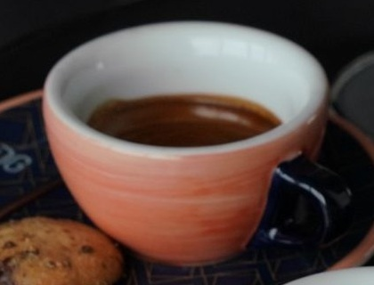
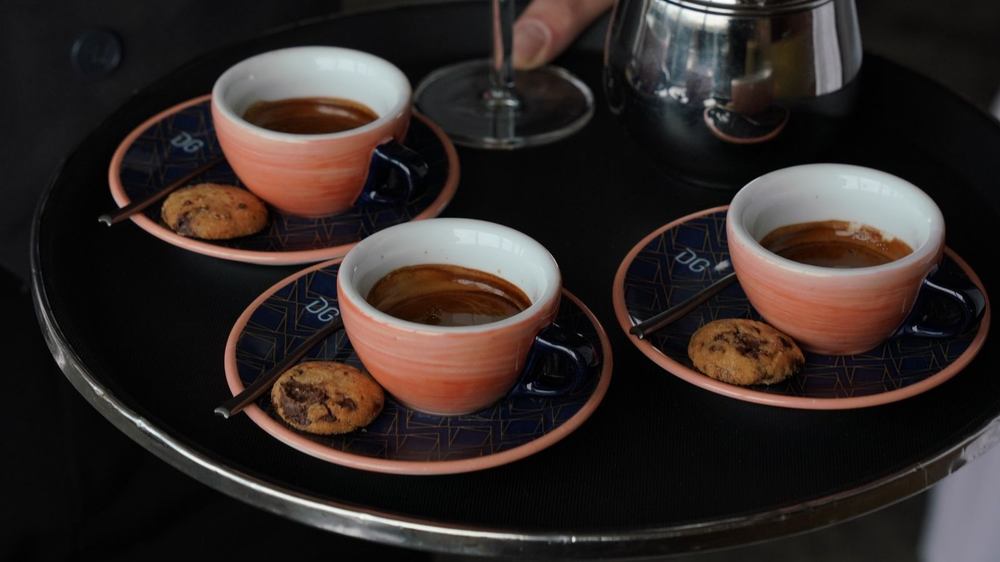
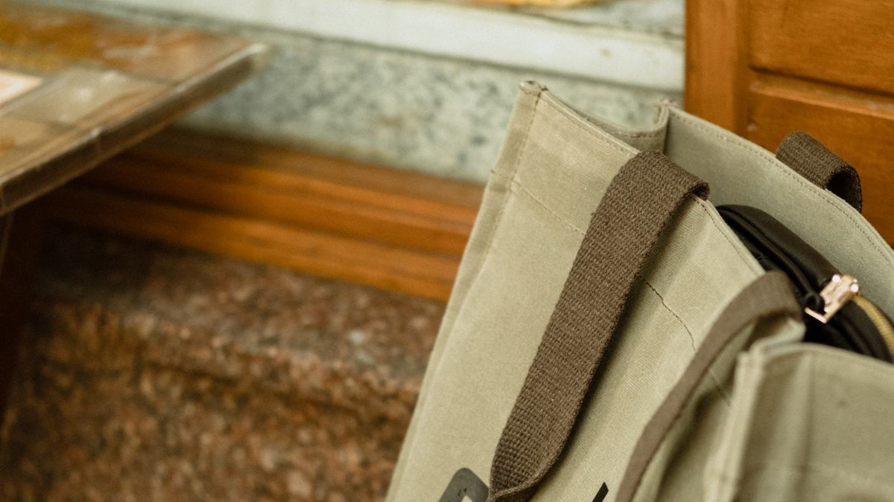
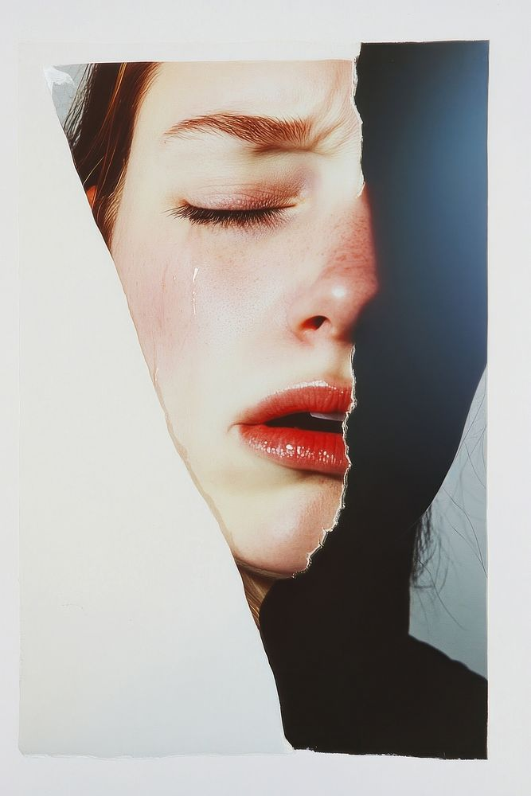

本页固定句式 · 讲完这部分再练There is a ______.There are ______.There are some / dozens of / hundreds of ______.当堂课练习：用上面的句型，说你手机里一张图里有多少东西。
第 5 / 13 页 · 中测①
中测① · 前两级，过一遍
三道题，看看"是什么 / 有几个 / 在干嘛"这三件事抓住没有

题 1 · 一只橙红色咖啡杯特写

题 2 · 三只咖啡杯放在托盘上题 3 · 一双手举着手机拍桌上的菜
单选题1. 图里只有一只咖啡杯。哪句最准确？
AThese are cups of coffee.
BThis are a cup of coffee.
CThis is a cup of coffee.
DThere are a cup of coffee.
单选题2. 图里现在有三只咖啡杯，放在托盘上。哪句对？
AThere are three cups on the tray.
BThere is three cups on the tray.
CThere are three cup on the tray.
DThis is three cups on the tray.
单选题3. 有人正举着手机，对着桌上的菜拍照。哪句对？
ASomeone take a photo of the food.
BSomeone is taking a photo of the food.
CSomeone are taking a photo of the food.
DSomeone taking a photo of the food.
第 6 / 13 页 · ③ 位置与颜色
③ 一张图，把位置和颜色说满
不用换图。这一整张群像海报里，前排后排、左中右、谁穿什么颜色，全都在。
《心想事成》官方群像海报 · 点图放大
① 位置 — 点一个说法：
in the middleon the lefton the rightin frontat the backnext tobetween
② 颜色 — 再点一个：
in yellowin greenin brownin white
A woman is in the middle.中间那位是位女士。先说位置，再补颜色。
把前两层的词一起带过来：There are some people. The girl in yellow is in front. She is next to ... 2 分钟任务：每点开一个位置/颜色按钮，先自己说一句，再点开例句对照，说错也正常。
本页固定句式 · 讲完这部分再练A woman is in the middle.The girl in yellow is in front.She is next to him. / He is between two women.There are some people in a line.当堂课练习：选你图里的一个人或物，说它在哪、什么颜色。
第 7 / 13 页 · ④ 动作与身体
④ 人在做什么，用哪个部位
功夫片的一格定格，比摆拍照片好用：动作大、关节清楚、一眼看得出在使劲。
《叶问4》官方海报 · 点图放大
点一个动作，看怎么说：
一条腿站着抬手 / 举推掌向前击向木人桩
He is standing on one leg.他抬起一条腿，单腿站立。动作配身体部位：one leg。
顺手带出部位词：
handarmlegheadeyes
「挥手、坐着、比 V」在群像海报里也能找到（见练习页）—— 动起来：同桌互相做一个动作，对方用英语说出动作 + 身体部位，如 He is raising his hand. / He is waving his hand.
本页固定句式 · 讲完这部分再练He is standing on one leg.He is raising his right hand.He is hitting the wooden post with his hand.当堂课练习：做或指一个动作，用上面的句型说出动作 + 身体部位（raise = 举，wave = 挥）。
第 8 / 13 页 · 中测②
中测② · 位置与多人，专项过一遍
四道题，第三级的两件事：东西在哪、谁跟谁在干嘛

题 1 · 包在椅子上，看位置题 2 · 两人与一把吉他题 4 · 一人站立服务、一人坐着的参照图
单选题1. 包放在椅子上，杯子放在托盘上。哪组句子对？
AThe bag is under the chair. The cups are in the tray.
BThe bag is on the chair. The cups are on the tray.
CThe bag is in the chair. The cups are under the tray.
DThe bag is next to the chair. The cups are behind the tray.
单选题2. 一个人坐着弹吉他，另一个人在旁边看着她。哪句最准确？
AOne person is playing the guitar, and the other person is looking at her.
BOne person play the guitar, and the other person look at her.
COne person is play guitar, and the other person is look at her.
DOne person playing the guitar, the other person looking at her.
单选题3. 下面哪一句的介词用错了？
AThe cups are on the tray.
BThe cookies are on the plates.
CThe coffee is in the cup.
DThe bag is in the chair.
多选题4. 看上面三张图，下面哪些句子是正确的？（多选，全对才得分）
AA bag is on the chair.
BOne person is playing the guitar.
CTwo people is looking at a phone.
DOne man is standing and another man is sitting.
第 9 / 13 页 · ⑤ 表情与内心
⑤ 脸上找证据，心里才有话
四张放大的独立特写，都从真实人物照片里裁出来。看眉毛、眼睛、嘴角，再说心情。
愤怒 · 生气
He looks angry.证据：His eyebrows are pulled down and together. His eyes are narrowed. His mouth is tight.
惊讶 · 吃惊
She looks surprised.证据：Her eyebrows are raised. Her eyes are wide. Her mouth is open.
咧嘴笑
She looks happy.证据：She is smiling with her mouth open.

悲伤 · 落泪
She looks sad.证据：There is a tear on her cheek. Her eyebrows are furrowed.
只说看得见的，内心留余地：照片里没有「害怕」两个字，所以不能说 She is afraid，要说 She looks afraid / Maybe she is afraid，再补一句 because I can see ...
本页固定句式 · 讲完这部分再练He / She looks angry / happy / surprised / sad.She looks happy, because I can see her big smile.Maybe he is angry, because his eyebrows are pulled down.当堂课练习：发一张人脸或自拍，用上面的句型说你看到的表情和猜的心情。
从「看得见」走到「有根据的猜」：He seems to be the main character, because he is in the middle. 有证据才敢说 because，没证据就用 maybe / seem to be。
本页固定句式 · 讲完这部分再练They are far apart. / They are side by side.They are not looking at each other.Maybe they are not on the same side.当堂课练习：选一张多人合照或海报，用上面的句型说清谁和谁的关系与站位。